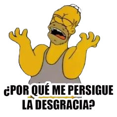
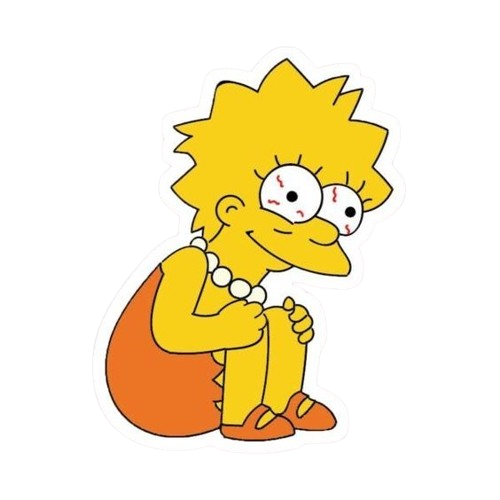
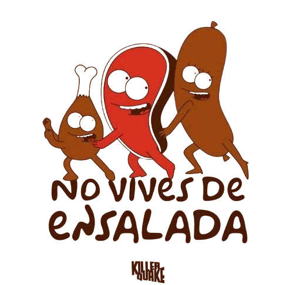
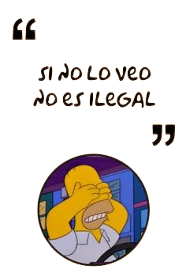

Tras haberse enfrentado a estas 15 preguntas, hay que ver cuántas se respondieron bien y descubrir así a qué categoría se pertenece:
- Entre 0 y 5 respuestas correctas: Todavía te queda mucho por ver y aprender.
 
- Entre 5 y 10 respuestas correctas: Seguro te sabés unas cuántas frases de memoria y viste varios episodios. Sin embargo, te falta prestarle más atención a algunos detalles... o ver Los Simpson más seguido.
 
- Entre 10 y 12 respuestas correctas: Sos parte de un selecto grupo de fanáticos. Sabés mucho y sin dudas pasaste tardes enteras en compañía de la familia amarilla.
- Entre 12 y 15 respuestas correctas: Un auténtico “pez del infierno” o uno de “los magios”. Se te escapan pocos detalles y como si eso fuera poco, sabés el detrás de escena de una de las series más famosas de la historia.

A continuación te presentamos unos datos curiosos sobre la familia amarilla.
Atrás Siguiente